My Game Development
Title Of My Game:-Eternal Dharma Yudha - Legends Of Light And Shadow
Genre Of My Game:-Action,RPG,Strategy And Narrative Adventure.
Theme Of My Game:-
In Ramayana Story(Part 1):-
“The Eternal Struggle Between Duty and Desire.”
At its heart, Ramayana: Path of Dharma is a story about righteousness (dharma) the inner battle of doing what is right, even when the cost is great.
Players step into the shoes of Rama, not just as a warrior, but as a symbol of self-control, sacrifice, and moral clarity in a world filled with temptation, injustice, and chaos. Every choice, every battle, and every dialogue carries the weight of moral consequence.
The game explores deep, timeless themes:
Loyalty vs. Power – How far will you go for those you love?
Honor vs. Emotion – Can you walk the path of righteousness without being consumed by vengeance or grief?
Order vs. Chaos – In a land plagued by demons and corruption, what does it mean to be a true leader?
Your journey is not just to defeat evil—but to understand it, resist it, and transform it through compassion, courage, and clarity of purpose.
In Mahabharatha Story(Part 2):-
“In the shadow of destiny, even gods bow to choice.”
1. Dharma vs Adharma (Righteousness vs Unrighteousness)
At the heart of the Mahabharata lies the eternal struggle between duty and desire, justice and ambition.
The game explores moral ambiguity, where even the "right" choice carries a cost.
"Is it just to fight your kin for the throne? Is silence in injustice worse than violence?"
2. Fate vs Free Will
Though characters are bound by divine fate and curses, they constantly make choices that shape their paths.
The player is placed in situations mirroring the characters’ dilemmas—making them question, “What would I do?”
"Karna is cursed, yet noble. Draupadi is humiliated, yet defiant. Can destiny be rewritten by the will of mortals?"
3. Power, Pride, and Consequence
The thirst for power (Duryodhana), pride (Karna), and even virtue (Yudhishthira’s addiction to honor) lead to catastrophe.
Each action in the game carries weight: some change public perception, others influence divine intervention.
"Even gods do not interfere without cost. Are you worthy of their favor—or their wrath?"
4. Unity and Division
Family ties are tested, alliances break, loyalty is a weapon.
The game forces players to navigate loyalty, betrayal, and political tension as war looms.
"The greatest war in history began not with a sword—but with a dice."
5. The Cycle of War and Redemption
The war may end kingdoms, but it also paves the way for renewal.
The player experiences both destruction and rebirth, witnessing the cycle of karma unfold.
"Victory is hollow if the soul is lost. Will you seek the throne, or seek peace?"
Concept Of The Game:-
A single mythological world seen through two different eras, with shared landmarks, evolving civilizations, and celestial zones that transcend time. The player explores how the actions of Rama in the Treta Yuga ripple into the Dvapara Yuga during Arjuna’s time.
The world is divided into interconnected regions that change across campaigns:
Region Name
Treta Yuga (Rama)
Dvapara Yuga (Arjuna)
Ayodhya
Prosperous golden kingdom
Deserted holy ruins, mythic site
Dandaka Forest
Demon-infested wildland
Sacred pilgrimage zone
Rameshwaram
Oceanfront war base, divine bridge builder
Shrine to Rama and Hanuman, half-sunken
Kishkindha
Vanara treetop cities
Overgrown ruins, forest consumed by time
Mount Meru
Celestial trials of Dharma
Astral gateway between ages
Kurukshetra
A field of legend foretold
Real-time war map for strategy missions
Indraloka / Astral Realm
Time-transcending divine zone
Same realm, now corrupted post-Kurukshetra
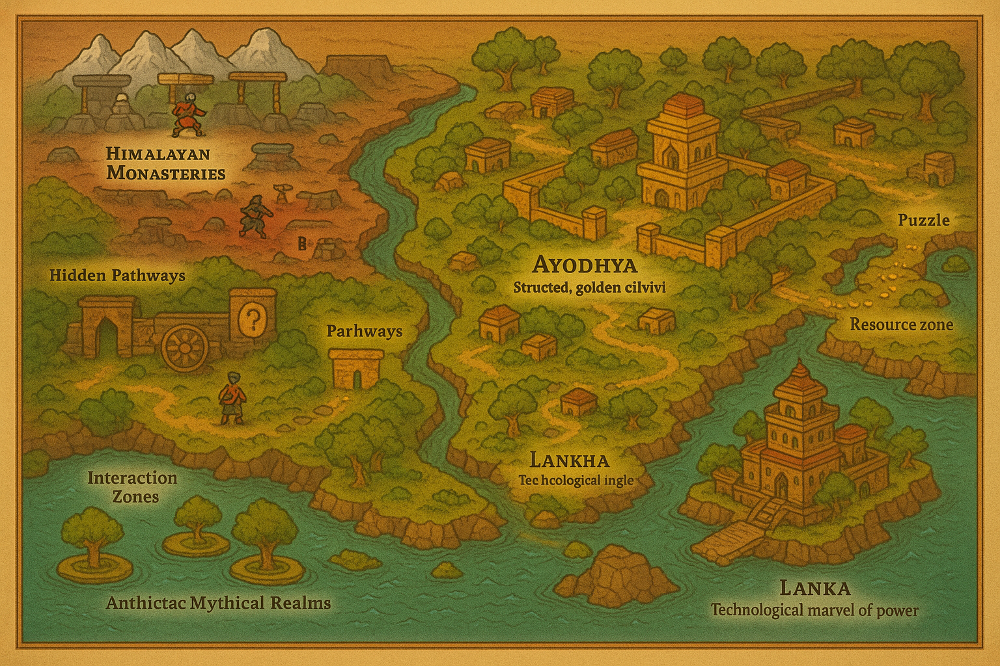
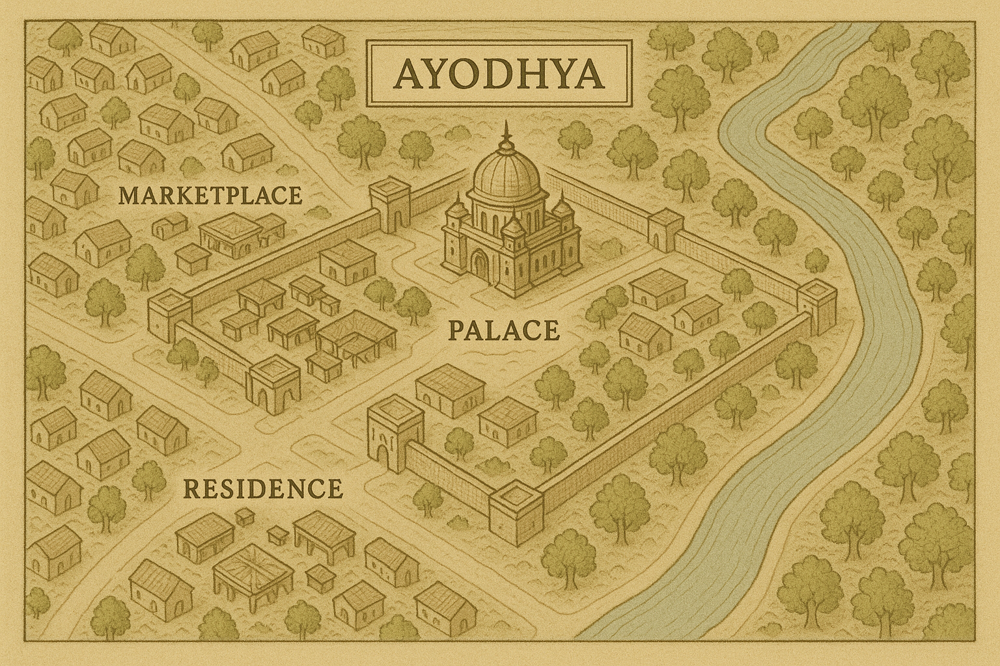
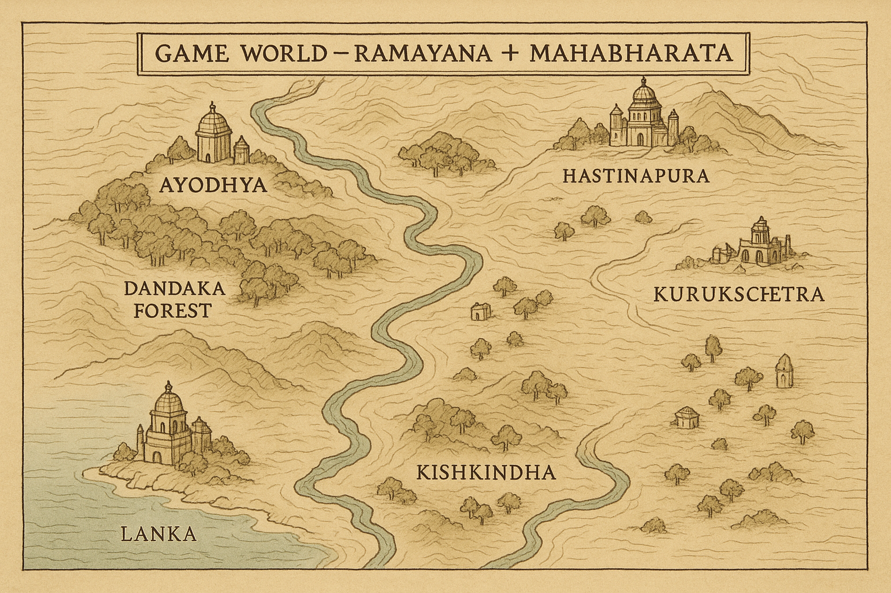
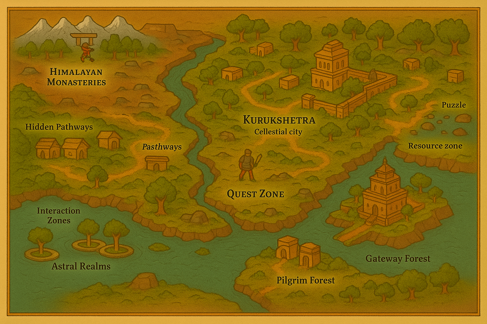
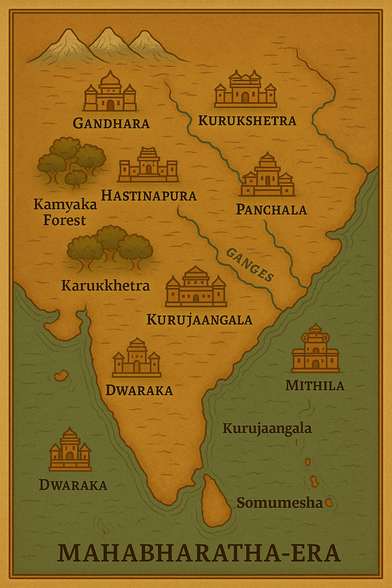
Ideation Of The World design:-
Semi-Open World with Expanding Regions
Structured like God of War (2018) or Zelda: BOTW but segmented by major story arcs.
Regions unlock as you progress through the storyline.Ex:-, forest > vanara kingdom > ocean > Lanka.
Each zone feels handcrafted, dense with lore, secrets, and side content.
Image References(From God Of War):-
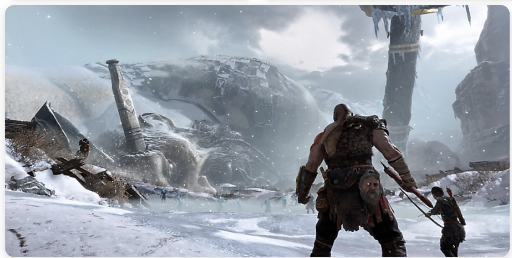
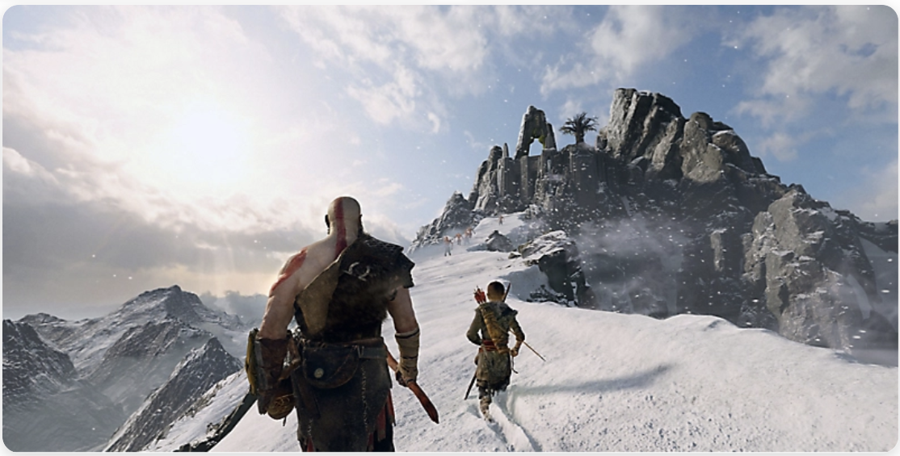
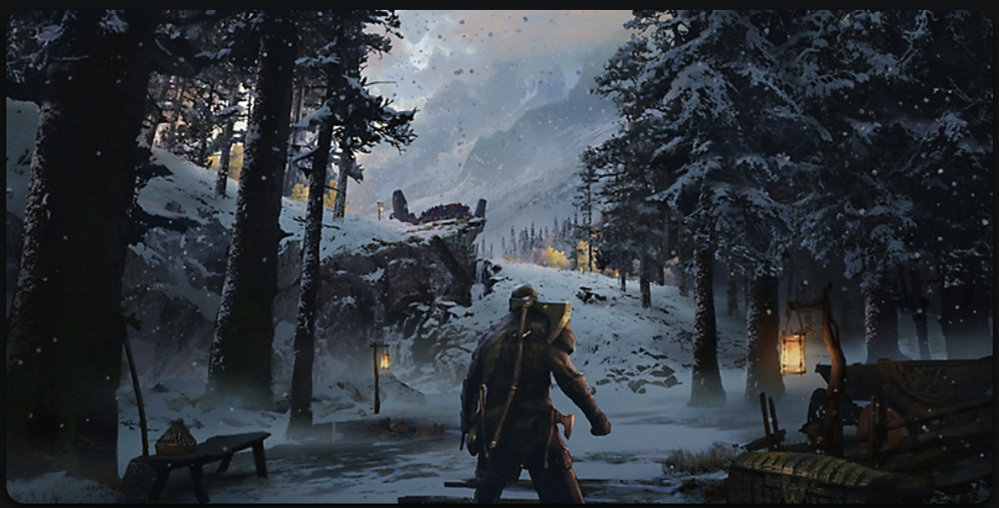
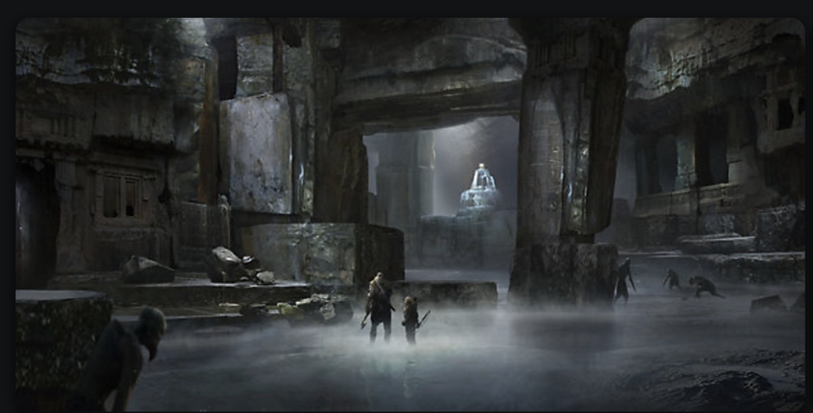
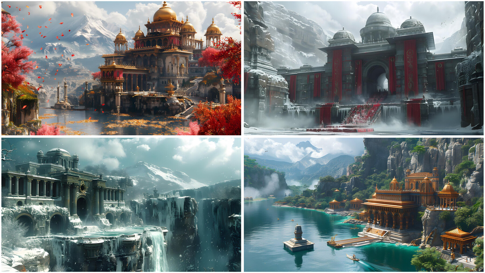
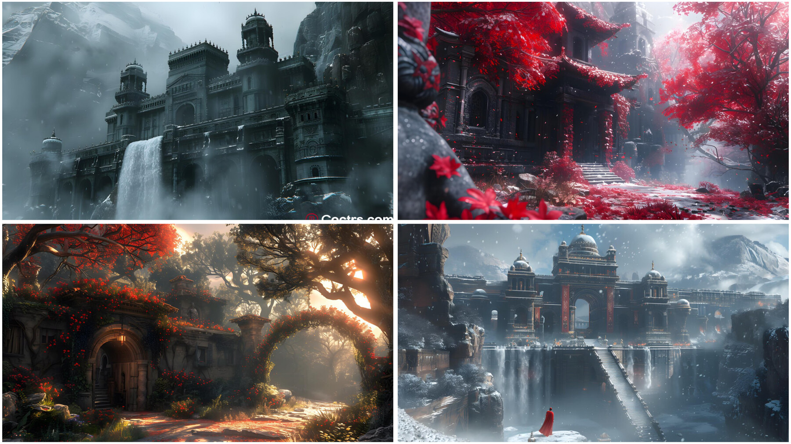
The Story Of My Game:-
Ramayana:The Hero’s Journey(Part 1):-
In an ancient age, when gods walked among mortals and demons ruled the dark corners of the world, the balance between good and evil hung by a thread. This is the tale of Rama, a prince born not just of royal blood, but of divine purpose.
Rama was the eldest son of King Dasharatha of Ayodhya, a mighty ruler blessed by the gods with four sons Rama, Bharata, Lakshmana, and Shatrughna. Rama, an avatar of the god Vishnu, was destined to protect dharma, the sacred law of righteousness.
Trained in the arts of war and wisdom, Rama was beloved for his strength, virtue, and compassion. He won the hand of the radiant princess Sita, daughter of King Janaka, in a test of valor by stringing the celestial bow of Lord Shiva. Their union was a symbol of harmony between divine will and mortal love.
But peace was short-lived.
On the eve of his coronation, Rama was exiled to the forest for 14 years, a cruel twist born of palace politics and the jealousy of Queen Kaikeyi, Bharata’s mother. Bound by honor and duty, Rama accepted his fate without resistance. Loyal Lakshmana and devoted Sita chose to accompany him, leaving behind royal comfort for the wild unknown.
In the vast, untamed forests, Rama’s journey truly began.
They encountered sages, vanquished demons, and grew in spiritual and physical strength. Yet their greatest trial awaited. The ten-headed demon king Ravana, ruler of Lanka and master of dark sorcery, abducted Sita, lured by her beauty and enraged by Rama’s growing power.
Thus began the war of all wars.
To find Sita, Rama allied with the vanara, a race of warrior monkeys led by the mighty Hanuman. Hanuman’s leap across the ocean, his fiery trial in Lanka, and his undying loyalty became legend. With the aid of Sugriva, Jambavan, and an army of beast warriors, Rama built a bridge across the ocean Rama Setu to invade Lanka.
The final battle was a cosmic storm of gods, demons, magic, and steel. Rama faced Ravana in a war that shook the heavens, ultimately slaying the demon with the divine bow gifted by the gods. With Ravana’s fall, Sita was freed but her honor questioned. To uphold righteousness and silence doubt, she walked through fire. The flames did not harm her, proving her purity to the world.
Rama, Sita, and Lakshmana returned to Ayodhya, where Rama was crowned king. His reign, known as Rama Rajya, was a golden era of peace, justice, and prosperity.
Yet, the story of Rama is more than a tale of war and victory. It is a journey of sacrifice, of love tested by destiny, of choosing duty over desire. It’s about holding onto righteousness in a world that tempts darkness.
Mahabharata:The Eternal War(Part 2):-
Long ago, in the ancient land of Bharat, a mighty kingdom teetered on the edge of destiny. The Kuru dynasty, rulers of Hastinapura, found itself divided between two bloodlines: the noble Pandavas and the ambitious Kauravas.
The Pandavas Yudhishthira, Bhima, Arjuna, Nakula, and Sahadeva were the sons of King Pandu, each born with divine blessings from the gods. Honorable, skilled, and wise, they were beloved by the people. In contrast, the hundred Kauravas, led by Duryodhana, were the sons of King Dhritarashtra, Pandu's blind brother. Duryodhana, driven by envy and a thirst for power, grew to despise the Pandavas.
Tensions rose when Yudhishthira was declared crown prince. Fueled by jealousy, Duryodhana plotted with his wicked uncle Shakuni to eliminate the Pandavas. A grand palace made of flammable materials, the House of Lac was built, and the Pandavas were lured there. But warned by their uncle Vidura, the Pandavas escaped the fire, disappearing into the forests.
In exile, the Pandavas married Draupadi, a fiery princess who would become the center of honor and vengeance. When they returned to Hastinapura, a fragile truce was formed. To avoid bloodshed, a great kingdom was divided. The Pandavas built a majestic city Indraprastha rivaling Hastinapura itself.
But peace was short-lived. Invited to a rigged game of dice, Yudhishthira lost everything: his kingdom, his brothers, and finally Draupadi. In a court full of kings and warriors, Draupadi was humiliated—yet she vowed revenge, and the Pandavas swore an oath. As part of their punishment, they were exiled for 13 years, the last year to be spent in disguise.
When the Pandavas returned and demanded their kingdom back, Duryodhana refused even to grant them five villages. War was now inevitable.
Both sides summoned allies. Arjuna was guided by none other than Lord Krishna, who offered him divine counsel on the battlefield of Kurukshetra. His teachings became the Bhagavad Gita, a timeless spiritual guide.
The Great War of Kurukshetra lasted for 18 days, shaking the heavens and earth. Legendary warriors like Bhishma, Drona, Karna, and Abhimanyu fell. Though the Pandavas emerged victorious, it was at a terrible cost. The battlefield was soaked in the blood of kin, and the Kaurava line was annihilated.
After the war, Yudhishthira ruled righteously, but the sorrow of victory weighed heavily on him. Years later, the Pandavas renounced their throne and journeyed toward the Himalayas, seeking salvation. One by one, they fell, until only Yudhishthira remained. He reached the gates of heaven, tested one last time, and was finally granted entry, reuniting with his loved ones in the eternal realm.
1.The Vision Begins
"I wanted to build a world that remembers. A land that breathes both the glory of Rama and the sorrow of Arjuna where dharma isn't just a lesson, it's a presence."
MDA Insight:
Mechanics: Dual timelines, karma points, timeline shifts
Dynamics: Player sees consequences across yugas; one action in Treta impacts Dvapara
Aesthetics: Narrative depth, emotional reflection, mystical immersion
2.Mapping the Dharma
I created mirrored biomes for Treta and Dvapara Yuga. Same map, different morality. The sacred becomes haunted. The divine becomes cursed.
Zones Designed:
Ayodhya: Radiant capital → Forgotten ruin
Kishkindha: Jungle citadel → Overgrown relic
Kurukshetra: Calm farmland → Epic war grave
MDA Insight:
Mechanics: Dual-yuga map, karma-influenced world layers
Dynamics: Exploration feels layered and historically significant
Aesthetics: Timeless wonder, moral awe, longing
3.Karma Shapes the Earth
Karma isn’t just a stat. It’s the world’s spine.
Save a vanara village in Treta? It became a shrine in Dvapara.
Slay a sacred beast? A fog rolls in the same spot 1,000 years later.
MDA Insight:
Mechanics: Karma system, moral dialogue trees, choice-consequence logic
Dynamics: Player alters terrain, NPCs, and music based on their choices
Aesthetics: Responsibility, empathy, regret, reverence
4 . Architecture of Faith and Fall
Architecture tells history silently.
Ayodhya uses pristine Nagara style temples.
Lanka is gold-tinted evil, towering yet graceful.
Hastinapura blends heroism and hubris, cracked towers, battle murals.
Each location is both a myth and a memory.
MDA Insight:
Mechanics: Environment lore triggers, glyph-reading mini-games, architecture-based puzzles
Dynamics: Players piece together story from ruins and inscriptions
Aesthetics: Spiritual reverence, awe, curiosity, melancholy
5.A World Remembering Itself
This world is conscious.
Time Echoes appear as visions or phantoms of the past.
Players witness Rama’s deeds while playing as Arjuna.
Same temples in different states; same relics, reborn.
MDA Insight:
Mechanics: Echo sequences, timeline-flip ability, vision stones
Dynamics: Timeline puzzles (change something in Treta to affect Dvapara)
Aesthetics: Mystical insight, meta-narrative discovery, destiny
6.Traversal as Meditation
Traversal isn't just movement. It’s symbolic.
Rama walks with divine elegance. Light follows him.
Arjuna treads heavily. War scars his path.
Sacred traversal zones let players:
Meditate to open gates
Use mantra bridges
Ride Garuda between timelines
MDA Insight:
Mechanics: Dynamic traversal (climb, leap, fly, meditate)
Dynamics: Karma alters traversal options
Aesthetics: Flow, freedom, spiritual rhythm, serenity
7.NPCs Across Lifetimes
Every NPC has a soul path.
A kind prince in Treta is a cursed ghost in Dvapara.
Dialogue changes if you meet their past version.
Animal spirits react to karma.
“The player isn’t just exploring the world. They’re redeeming or condemning it.”
MDA Insight:
Mechanics: Rebirth cycles, karma-based NPC trees, faction relationships
Dynamics: Emotional re-encounters across time
Aesthetics: Sorrow, forgiveness, mystical connection, poetic justice
8.Visual and Auditory Soul
Visual FX and ambient sound reflect your spiritual state:
Divine Zones: glowing petals, soft chants, lotus-shaped light
Cursed Zones: red mist, whispering ghosts, dull echoes
Music reacts dynamically to:
Location
Player karma
Quest outcome
MDA Insight:
Mechanics: Reactive shaders, sound layering systems, karma-based visual palettes
Dynamics: Environmental storytelling through senses
Aesthetics: Immersion, tranquility, spiritual unease, beauty in decay
9.The Final Layer: The Self
“This isn’t just a mythological world. It’s a mirror.”
I realized the most powerful experience I could give was reflection.
This world doesn't reward power. It rewards understanding. It remembers. And above all it judges your intent.
Final MDA Summary
Aspect
Mechanics
Dynamics
Aesthetics
World
Two timelines, karma stat, memory zones
Change the past to influence the future
Wonder, regret, legacy
Karma
Dialogue trees, choice branches, NPC evolution
Reactions from world/NPCs shift; zones beautify or corrupt
Spiritual weight, reflection, emotional connection
Combat
Style-based (Rama = divine, Arjuna = tactical), elemental arrows
Use mantras or relics depending on karma; unlock celestial skills
Heroic pride, mystic satisfaction, power with cost
Traversal
Meditation, flight, spirit leap, echo-triggered movement
Unlock shortcuts via karma, unlock divine bridges
Freedom, harmony, discovery
Lore
Scattered scrolls, temple murals, vision stones
Players piece together epics; choices influence lore endings
Discovery, reverence, personal mythology
Audio/Visual
Karma-reactive audio, particle FX, light/fog shaders
Player feels divine or cursed depending on actions
Deep immersion, spiritual resonance, mythic ambience